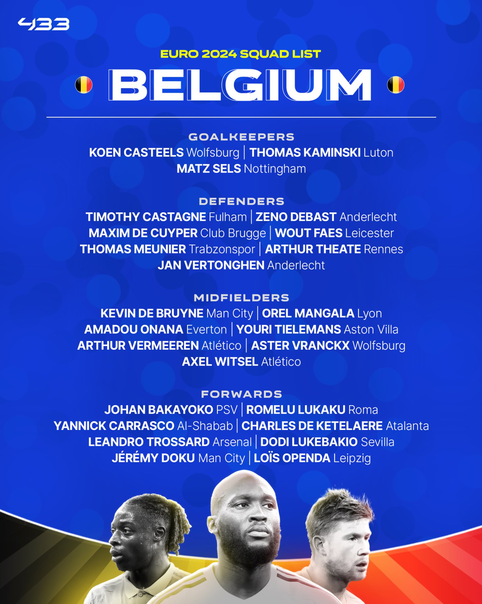
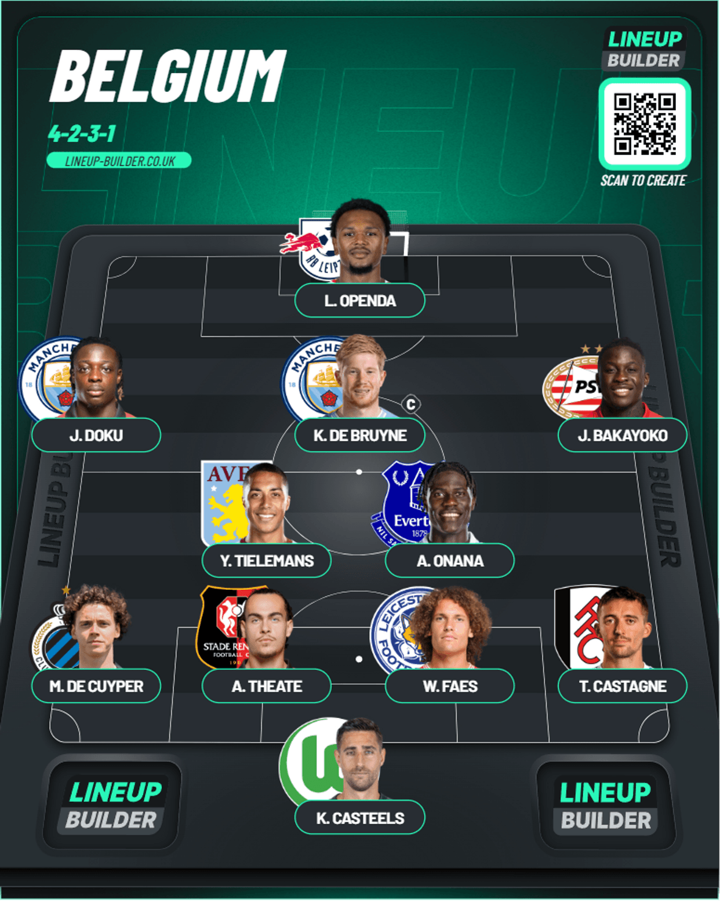

Belgium Squad
Table of Contents
Belgium Squad Reaction

A new era begins after the departure of Roberto Martinez after the World Cup(Ranted way too hard about him in the World Cup Post) but he’s in Portugal. He better not mess up Ronaldo’s 6th Euros or we will have words AGAIN. Anyways let’s see what Tedesco has picked for this Belgium team
Goalkeeper
A major miss here which you could see is the exclusion of Thibaut Courtois. I can understand it because he returned after a very major ACL injury and didn’t have enough games. Instead of him you’ve got Casteels who’s had an okay season with Wolfsburg, Kaminski who’s had an alright season with Luton but they got relegated in the end and finally Matz Sels who came to Nottingham Forest in January but I honestly barely heard a peep on his performance. I think I’ll pick Casteels because of his experience.
Defense
I’m glad this time you don’t have all the tortoises from last time. Just one of them in Vertonghen. For the rest you’ve got Wout Faes who was central to Leicester gaining promotion back to the Premier League and also Theate who didn’t actually have a chance back in the World Cup but now he does after a good season with Rennes. For the full backs you can’t look past Meunier and Castagne but Meunier seems to be injured currently so I think I’d go with Castagne and a new young talent in Maxim De Cuyper who’s broken out at Club Brugge. I think this could be a time to shine for him. Let’s see what he can do
Midfield
This manager seems to prefer a 4-2-3-1 so for the 3 midfielders I’d go with Onana(Had a great season with Everton. Could be on the move), Tielemans(Solid performer for Aston Villa) and Kevin De Bruyne(Came back from injury and showed his quality even if he ghosted in the FA Cup Final) as the captain too. You have good talent with Aster Vranckx and Arthur Vermeeren(Came in January to Athletico Madrid and he’s been okay). In other options you also got Mangala for backup.
Attack
For the 3 people in attack, you’ve got really good options. Doku has been really good for City with his unpredictability(Even though he was locked down by Wan Bissaka) and Bakayoko has had a solid season with PSV. My personal preference would mostly be for Lois Openda for his storming season with Leipzig(Alongside Sesko). For backup you’ve got another capable ST in De Ketelaere and also Lukaku who’s simply Lukaku(We know he had horrible missed in the World Cup. Need I say more?). In the wings you’ve got super sub Trossard who’s made a really good impact when he comes from the bench and also an experienced option in Carrasco(Even though he is collecting the bag in Saudi)
How I’d lineup
